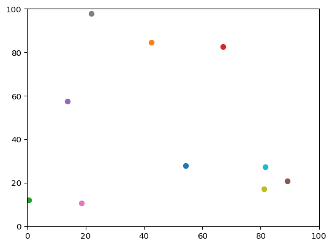
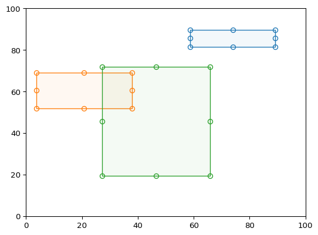
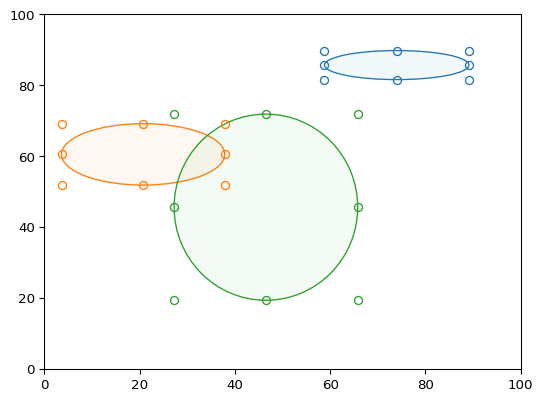
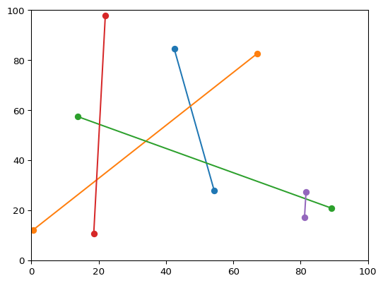

{kind=link}
{kind=link}
Mpltoolbox#
Interactive tools for Matplotlib
Mpltoolbox aims to provide some basic tools (that other libraries such as bokeh or plotly support) for drawing points, lines, rectangles, polygons on Matplotlib figures.
There are many interactive examples in the Matplotlib documentation pages, but the code snippets are often long and potentially not straightforward to maintain.
With mpltoolbox, activating these tools should (hopefully) just be a on-liner.
Installation#
To install Mpltoolbox and all of its dependencies, use
pip install mpltoolbox
conda install -c conda-forge mpltoolbox
Example#
import matplotlib.pyplot as plt
import mpltoolbox as tbx
%matplotlib widget
fig, axes = plt.subplots(2, 2, figsize=(12, 8))
for ax in axes.flat:
ax.set_xlim(0, 100)
ax.set_ylim(0, 100)
points = tbx.Points(ax=axes[0, 0])
lines = tbx.Lines(ax=axes[1, 1])
rects = tbx.Rectangles(ax=axes[0, 1])
ells = tbx.Ellipses(ax=axes[1, 0])
|  |  |
|  |  |
Get in touch#
If you have questions that are not answered by these documentation pages, ask on discussions. Please include a self-contained reproducible example if possible.
Report bugs (including unclear, missing, or wrong documentation!), suggest features or view the source code on GitHub.